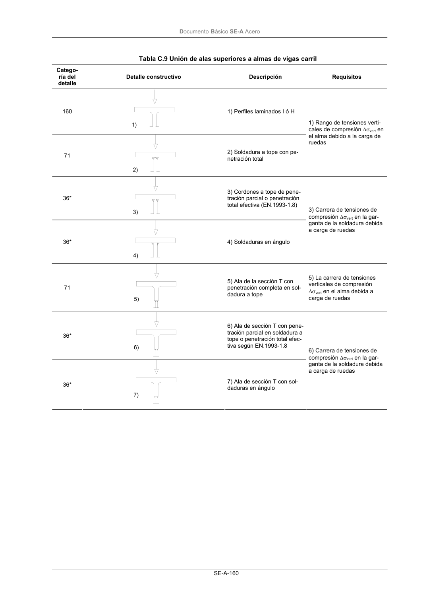

DB-SE-A · Página 162 · versión 2007-10-23
SHA256: 9ed9ea694aabfbda3bfbbef40dfe9223fde05d13c35bc2ba9751e5a96a22a64f · página física 162 de 168 · métodos de encabezado
solo si están cotejados.
Documento · ← p. 161 · p. 163 →
Formatos: Markdown · JSON de bloques · PDF p. 162 · imagen PNG
Documento Básico SE-A Acero SE-A-160 Tabla C.9 Unión de alas superiores a almas de vigas carril Catego- ría del detalle Detalle constructivo Descripción Requisitos 160 1) Perfiles laminados I ó H 71 2) Soldadura a tope con pe- netración total 1) Rango de tensiones verti- cales de compresión ∆σvert en el alma debido a la carga de ruedas 36* 3) Cordones a tope de pene- tración parcial o penetración total efectiva (EN.1993-1.8) 36* 4) Soldaduras en ángulo 3) Carrera de tensiones de compresión ∆σvert en la gar- ganta de la soldadura debida a carga de ruedas 71 5) Ala de la sección T con penetración completa en sol- dadura a tope 5) La carrera de tensiones verticales de compresión ∆σvert en el alma debida a carga de ruedas 36* 6) Ala de sección T con pene- tración parcial en soldadura a tope o penetración total efec- tiva según EN.1993-1.8 36* 7) Ala de sección T con sol- daduras en ángulo 6) Carrera de tensiones de compresión ∆σvert en la gar- ganta de la soldadura debida a carga de ruedas
